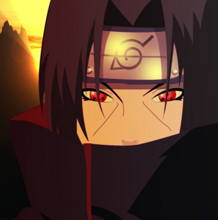

Itachi Uchiha (うちはイタチ, Uchiha Itachi) was a prodigy of Konohagakure's Uchiha clan that served as an Anbu Captain. He later became an international criminal after murdering his entire clan, sparing only his younger brother, Sasuke. He afterwards joined the international criminal organisation known as Akatsuki, whose activity brought him into frequent conflict with Konoha and its ninja — including Sasuke — who sought to avenge their clan by killing Itachi. Following his death, Itachi's motives were revealed to be more complicated than they seemed and that his actions were only ever in the interest of his brother and village, remaining a loyal shinobi of Konohagakure to the very end.
Desde a tenra idade, Itachi era tranquilo e perspicaz. Ele viveu à distância, observando os indivíduos e ideias sem se envolver diretamente para que ele pudesse entendê-los completamente.[8] Embora esta abordagem o impedisse de se tornar próximo das outras pessoas, isso lhe permitiu pensar e agir sem preconceitos ou preconcepções, ao invés de avaliar as coisas estritamente em seus próprios méritos. Ele passou a pensar sobre os shinobi, as origens da vila e o seu futuro.[9] Por esta razão ele nunca teve a lealdade hipócrita ao seu clã que era tão comum entre os Uchiha; embora ele amasse sua família e queria o melhor para eles, ele sabia que havia coisas mais importantes do que as aspirações dos Uchiha.